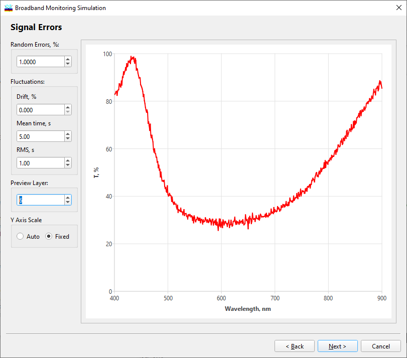

Broadband Monitoring Simulation - Signal Errors
Broadband Monitoring Simulation - Signal Errors
Navigation: OptiLayer Menu Commands > Analysis Menu > Broadband Monitoring Simulation >
Broadband Monitoring Simulation - Signal Errors
` <broadmonsimul_monitsystem.html>`__ ` <broadbandmonitoringsimulatio.html>`__ ` <broadmonsim_simul.html>`__

At the fourth step of the dialog, errors in measured online data are specified.
The Random Errors entry field specifies the level of random noise in online data.
The Fluctuations group of entry fields allows the user to specify piece-wise-linear fluctuations of measurement data over time. The Drift entry field specifies the level of an additive measurement data drift in a random time interval specified by the next two fields. A value in the Mean time entry field is the mean value of this interval, and a value in the RMS field is the standard deviation of this interval.
The Calibration Drifts group of entry fields is used to simulate shifts and calibration drifts of online spectrophotometric measurements over time. The rate of shift or calibration drift is specified in the Rate, %/1000s entry field. Let a value in this field be equal to “a”. If the Shift radio button is checked, then measurement data is shifted by “a%” in 1000 seconds. If the Scale radio button is checked, then a measurement data calibration drift is simulated. This means that the baseline transmittance of an open optical path is measured as equal to 100%+a% in 1000 seconds after its calibration as equal to 100%. The Recalibr.time entry field allows the user to specify a time interval in which a recalibration of the online monitoring device is done.
The Preview Layer entry field allows the user to select a layer number for previewing the monitoring signal. The Update button simulates a new set of monitoring data.
The Y Axis Scale radio button allows selecting the type of scaling for the preview screen.
See also: